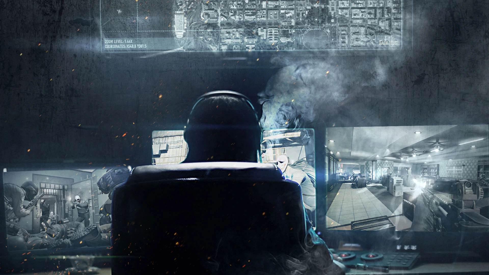

About the Gang
The Payday Gang are a set of robbers of various backgrounds who work together to steal money, gold, and other goods from various people. Their members include Dallas, Hoxton, Chains, Wolf, and Houston, all of which are lead by Bain their contractor. Throughout their time operating, they've robbed banks, other gangs, stores, and have done various other illegal activities. When they do rob, they typically run into security guards and police they have to go through to escape. They mainly operate through a network known as Crime.net, a series of criminals and contractors alike throughout Washington DC.
Bain - Leader in the Shadows
He's "The Leader". The man who runs Crime.Net. The spider at the center of the web. We know almost nothing about this man. His name was mentioned here and there by lowlifes we would pick up - escape drivers, couriers, that kind of thing. Mainly they would drop his name in the hope of getting a plea deal but not one was able to give us anything solid. No hard evidence. A few intercepted radio snippets, but not a single image He is presumed to be deceased